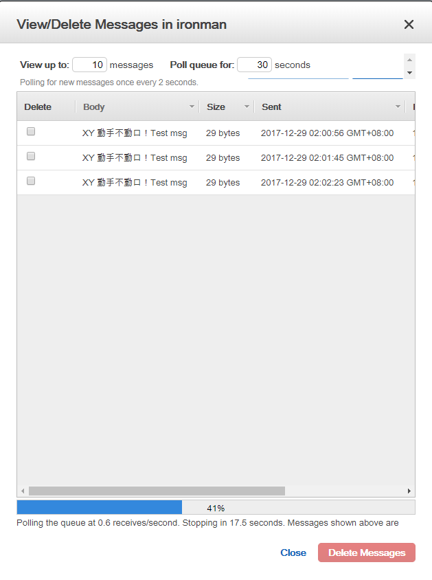

30天鐵人賽介紹 AWS 雲端世界 - 21: SQS 雲端佇列服務
What is SQS
訊息佇列是一種源自於設計架構裡面的緩衝服務，可以說是一個系統架構的核心基礎層。透過這種方式我們可以把產生資料源的端口(producer)與接續處理資料的消費端口(consumer)一分為二:
這樣的方式不限於在服務與服務內建立，也可以在單一服務內各模組與模組中間做使用，而如此一來則可以達到下列優點：
- 輸入、輸出解耦，可重用性高。
- 解耦後，各自的邏輯變簡單，程式的可讀性提高。
- 輸入、輸出分開在不同執行緒，效率提高。
對於這樣的設計模式有興趣的話可以參考這篇Producer-Consumer Pattern – 我來做，你來用
SQS 提供兩種類型的訊息佇列：
Standard Queues
提供最高輸送量、盡力提供最佳排序，以及至少交付一次。傳送數量無限
SQS FIFO:
此類型訊息佇列的設計目的是要保證訊息只會完全依照它們的傳送順序處理一次，並提供有限的輸送量。
而對於訊息佇列的操作可以一次執行一個訊息或是一個批量(patch)，這邊可以依照使用情境做適合的使用。
SQS 訊息生命週期
SQS 中儲存的訊息的生命週期如下:
- 需要傳送訊息的系統將選取 Amazon SQS 佇列，並使用 SendMessage 將新訊息傳送到佇列。
- 而處理訊息的另一個系統需要較多訊息進行處理，所以會呼叫 ReceiveMessage，然後傳回此訊息。
- 訊息一旦由 ReceiveMessage 傳回，除非可見性逾時已過，否則不會由其他 ReceiveMessage 傳回。這可避免多個消費者同時處理相同的訊息。
- 如果處理訊息的系統順利完成此訊息處理，會呼叫 DeleteMessage 將訊息從佇列移除，系統就不會再次處理該訊息。如果此系統無法處理訊息，只要可見性逾時已過，便會由另一個 ReceiveMessage 呼叫讀取訊息。
- 如果來源佇列有與其關聯的無效字母佇列，系統會在達到指定的交付嘗試次數上限之後，將訊息移到無效字母佇列。
詳細內容可以閱讀官方SQS Message Lifecycle說明。
Hands on Lab
接著我們將簡單的透過 node.js 分享如何使用 SQS 服務建立訊息與取用訊息。
Setup environment and Create SQS Queue
在開始之前先確定本身環境已經安裝 node.js:

當我們將環境準備好後，可透過 npm 指令安裝 Node.js 中 JavaScript AWS SDK 協助我們在程式內取用 AWS 服務：
npm install aws-sdk
這邊要稍微注意一下預設的 aws_access_key_id 與 aws_secret_access_key 是建立在下面的路徑下：
- Linux users: ~/.aws/credentials
Windows users: C:\Users\USER_NAME.aws\credentials
[default]
aws_access_key_id = <YOUR_ACCESS_KEY_ID>
aws_secret_access_key = <YOUR_SECRET_ACCESS_KEY>
如果對上述的兩個資料有點陌生或是不知道在說什麼，可能要回去第四天的30天鐵人賽介紹 AWS 雲端世界 - 4: AWS 服務和資源的帳戶權限掌控者 - Identify Access Management(IAM)這邊複習一下。
而接著我們登入 [AWS Console] 後在中間的輸入框查詢 Simple Queue Service ，或是透過左上角的 Services 點選到 Application Integration 下的 Simple Queue Service 服務：
進入服務後我們透過左上方的新增按鈕加入一個新的 SQS 佇列：
這邊可以看一下 Dead-Letter Queues(無法投遞的信息) 設定，這邊可以勾選當遇到訊息寄送異常是否重複嘗試、當嘗試後還是失敗時要移至哪一個額外的佇列存放與重複嘗試次數，先前介紹 SQS 有兩種不同類型的佇列這邊針對 Dead-Letter 的處理也會有些許差異，Standard Queues 允許大量傳輸中的訊息(未完成)，但如果有大量的傳輸中的訊息持續要進行處理而沒有移至 Dead-Letter Queues 則會讓服務的效能下降，這邊要稍微注意。 這邊的實際設定與範例可以參考Using Dead Letter Queue in AWS SQS
這邊我們保留預設不做調整。當服務佇列建立好，即可看到我們的 endpoint URL，我們將會透過此 URL 撰寫程式。
接下來我們就要回去 node.js 開發環境撰寫訊息生產端與訊息消費端程式。
Implement Program for Producer and Consumer
這邊開發上要注意引入先前安裝的 aws-sdk 並設定服務 Region 與建立服務 object :
1 | // Load the SDK for JavaScript |
Region 可以參考 AWS Regions and Endpoints
而當我們添加以下以下代碼至 Producer 資料夾內並運行起來即可看到以下內容：
1 | var params = {}; |
當看到內容即可知道我們的服務可取用到 SQS 服務了，接著我們補充以下程式碼並再次執行為當前的佇列添加訊息：
1 | var posMsgParams = { |
回到網頁端可以看到訊息已經成功增添，我們可以瀏覽一下當前的內容：

我們也可以看到單條訊息的內容：
當完成上述的生產端程式後，即可開始建立消費端程式，這邊與生產端類同的方式產生 SQS 物件後即可透過 receiveMessage 來進行處理：
consumer\index.js
1 | // Create an SQS service object |

如此一來，很簡單的 Queue 服務串接即完成。看到這邊可能很多人會問充滿疑惑地問：難道只能用過被動 拉取(pull data)訊息 的方式來接收嗎？有沒有類似主動推播的 Pub/Sub 架構呢?
明天就會各位介紹如何 SNS 這項服務並透過 SNS + SQS 來達成基層的訊息架構。就讓我們繼續看下去吧～
以上範例原始碼請至AWS SQS sample code